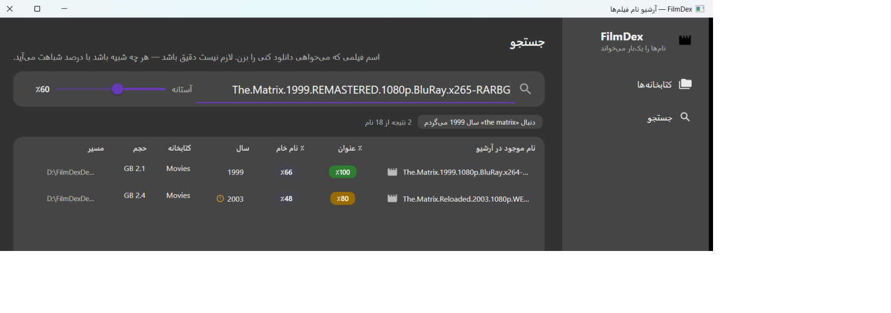
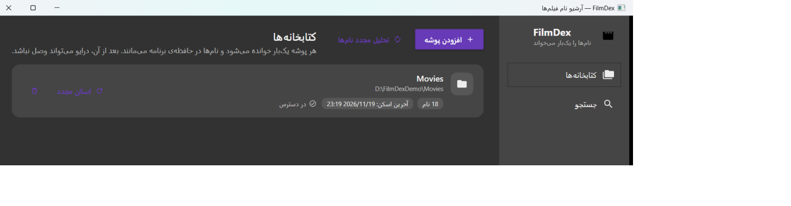

دو درصد، نه یک درصد
یکی شباهت «عنوان تمیزشده» و یکی شباهت «نام خام». اگر پارسر اسمی را عجیب فهمید، باز هم از راه نام خام میبینیاش. قضاوت نهایی با خودت است.
FilmDex پوشههای فیلمت را یکبار میخواند و نامها را در حافظهی خودش نگه میدارد. بعد از آن هارد لازم نیست وصل باشد: اسم فیلمی را که میخواهی بگیری بزن، و ببین چقدر به چیزی که همین حالا داری شبیه است.

«یک فیلم را دانلود میکنی، سه ماه بعد همان را دوباره دانلود میکنی — چون اسمش اینبار Blade.Runner.2049.2017.2160p است و آنیکی BladeRunner2049-4K.»
جستجوی دقیق این را پیدا نمیکند. برای همین FilmDex دنبال «شباهت» میگردد، نه تطابق.
یک ابزار شخصی که یک کار را درست انجام میدهد: به تو بگوید این فیلم را داری یا نه.
یکی شباهت «عنوان تمیزشده» و یکی شباهت «نام خام». اگر پارسر اسمی را عجیب فهمید، باز هم از راه نام خام میبینیاش. قضاوت نهایی با خودت است.
1080p، x265، WEB-DL، نام گروه، نقطه و آندرلاین، و حتی www.SomeSite.us اول اسم — همه کنار میروند تا عنوان واقعی بماند.
یکبار اسکن، و نامها در یک دیتابیس SQLite کنار خودت میمانند. هارد اکسترنال را بگذار توی کشو؛ جستجو سر جایش کار میکند.
«ي» عربی و «ک» عربی، اعداد ۰۱۲۳ فارسی، نیمفاصله، و واژههایی مثل «دوبله فارسی» و «بدون سانسور» — همه یکدست میشوند تا مقایسه معنا بدهد.
ایندکس در حافظه است و یک پیشفیلتر دوحرفی اول کار را سبک میکند، پس نتیجه همانطور که مینویسی عوض میشود — حتی وقتی دهها هزار نام ذخیره کردهای.
نه حساب کاربری، نه ارسال آمار، نه ارتباط با سرور. فهرست فیلمهایت فقط روی کامپیوتر خودت است و کد هم باز است تا همین را ببینی.
این همان الگوریتمی است که داخل برنامه اجرا میشود، پیادهشده در مرورگر. آرشیوِ این نمونه ۱۳ فیلم ثابت است؛ در خود برنامه، پوشههای خودت.
عدد بزرگ، شباهت عنوان است؛ «نام خام» شباهت رشتهی اسم فایل، بدون هیچ تمیزکاری. در برنامه آستانهی نمایش را هم خودت تنظیم میکنی.
پوشهی فیلمها را بکش روی پنجره یا از دکمهی «افزودن پوشه» انتخابش کن. زیرپوشهها هم خوانده میشوند و فقط فایلهای ویدئویی و نام پوشهها ثبت میشوند.
نامها، حجم و تاریخ در دیتابیس ذخیره میشوند، همراه با عنوان تمیزشده و سالی که از هر اسم استخراج شده. بعد از این، درایو میتواند قطع باشد.
اسم فیلم — یا کل نام تورنت — را در بخش جستجو بزن. هرچه شبیه بود با درصدش میآید، و خودت تصمیم میگیری تکراری است یا نه.

زیپ را باز کن و FilmDex.exe را اجرا کن. نه نصبی لازم است، نه داتنتی، نه اینترنتی. آرشیو هم در %LOCALAPPDATA%\FilmDex مینشیند.
549BBABBB2BB9BB2E7E203ACC716ADDD1684436CFB468555F9913BE61F60FC93
ویندوز ۱۰ یا ۱۱، ۶۴ بیتی. ساختهشده روی GitHub Actions از روی همین کد، با تستهایی که پیش از انتشار اجرا میشوند.